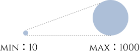

古诗词作为现代流行歌词的远祖，承载着千年文化的积淀与智慧。它们的"剪不断，理还乱"的复杂情感与"抽刀断水水更流"的不灭生命力，注定了它们在中国文化中的独特地位。这种深厚的文化底蕴与传承，不仅是历史的延续，也是中国民族精神的象征。不可否认，古诗词与现代流行歌曲之间存在着深刻的联系，它们之间的纽带如同岁月流转中永不枯竭的溪流，互相交织，息息相关。从邓丽君的《独上西楼》到周杰伦的《东风破》，从龚琳娜的《山鬼》到虚拟歌姬洛天依的《霜雪千年》，古诗词与流行音乐的碰撞从未停止。这些歌曲不仅让千年诗句在现代旋律中焕发新生，也让我们看到传统文化与当代艺术的奇妙融合。
如今，古诗词在现代歌曲中的运用已经成为一种普遍现象。从古典的诗词到现代的曲风，诗与歌的结合不仅让古诗词焕发新的生机，也为流行歌曲赋予了更多文化的厚度。这种跨越时空的结合，不仅彰显了古诗词的生命力，也展示了流行文化对传统文化的尊重与传承。在这种互为促进的过程中，古诗词和流行歌曲共同谱写着时代的乐章。
古诗词是如何与现代流行歌曲结合，焕发出新的生命力的？我们从超过10万首歌曲中筛选出了近4000首，从歌曲本身，歌曲与歌手，以及歌曲与听众的角度，试图分析古诗词歌曲的美丽与奥秘。
首先，我们从整体来看古诗词歌曲的分布特点。每个圆形代表一首流行歌曲，圆形越大代表它越受欢迎（点赞评论数越多）

如果将时间轴拉长，你会发现古诗词歌曲的创作并非均匀分布。我们统计了近十年637首引用古诗词的流行歌曲，发现2017年是一个明显的分水岭。这一年，《经典咏流传》等文化综艺的热播，推动古诗词歌曲创作达到高峰，全年共诞生89首相关作品。而疫情三年间（2020-2022），古诗词歌曲的创作并未停滞，反而呈现出"轻量化"趋势——片段化引用比例较前期增长27%。这种变化或许反映了创作者的巧思：他们不再追求整首诗词的完整呈现，而是将古诗词作为现代情感表达的"点睛之笔"。
在众多被引用的古诗词中，苏轼的《水调歌头》和李白的《静夜思》无疑是最受欢迎的。前者被改编了32次，后者被改编了28次。这些诗词之所以被反复引用，或许是因为它们的情感表达足够普世，能够跨越时空与当代听众产生共鸣。
当然，古诗词的引用方式也各不相同。我们把引用的诗词长度排了一下序，发现大多数诗词只引用了几个字或则一句话。也有超过了220个字的，是引用了整首诗的。
我们将其分为三种类型：整首复刻、金句镶嵌和碎片化重组。龚琳娜的《山鬼》是整首复刻的代表，她将屈原的楚辞完整地融入歌曲，保留了原诗的韵律与意境；周杰伦的《东风破》则是金句镶嵌的典范，"一盏离愁"化用自苏轼的《蝶恋花》，将古典意象与现代旋律完美结合；而许嵩的《燕归巢》则采用了碎片化重组的方式，"远山见竹林芳草"化用自《滕王阁序》中的"层峦耸翠，上出重霄"，以轻巧的方式重构了古典意境。
如果说古诗词是文化的载体，那么歌手就是这场文化对话的摆渡人。我们通过数据绘制了一张网络图，将歌手、古诗词和歌曲连接起来，发现了一些有趣的现象。
我们挑几个比较多的歌手来看，他们唱的歌分别有什么特点。
古诗词歌曲不仅是创作者的艺术表达，也是听众情感投射的载体。我们爬取了古诗词歌曲下的听众评论，发现了一些令人动容的细节。
从评论词云图中，我们可以看到高频出现的词汇：“泪目”“DNA动了”“老祖宗审美”。这些情绪化标签的背后，是听众对传统文化的深切共鸣。古诗词歌曲不仅唤醒了他们的文化记忆，也成为了他们表达情感的媒介。